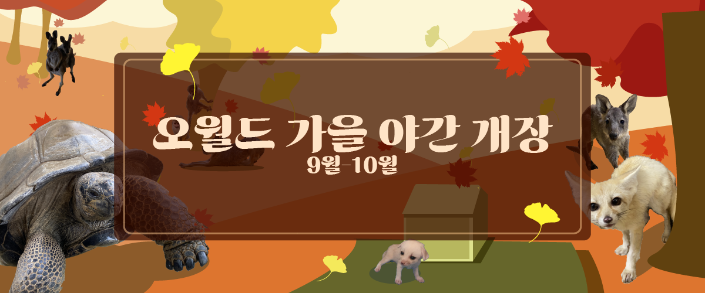
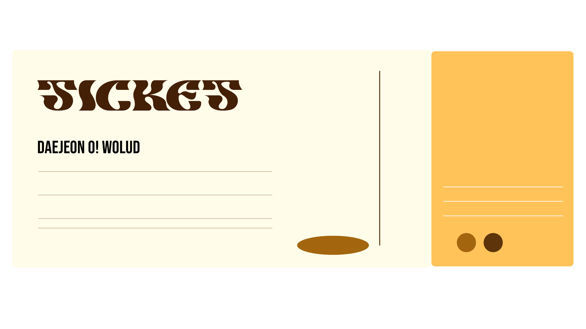

환상의 대전 O! WOLRD
동물원 정보안내
동물사 소개
동물원 날씨 안내
운임요금 안내
FAQ

오월드 공지사항 안내
동물 건강검진 안내 (23.09.15)
금주 어린이 동물원의 사막여우 방사장에서, 무단으로 투기한 채소류가 발견되어,
사막여우 전 개체가 건강검진을 진행합니다.
개별적으로 가져오신 채소 및 음식류를 방사장에 넣는 행위는 엄격히 금지되어 있습니다.
이점 유의해주시기 바랍니다.
사막여우 재 방사 일정에 대해서는 추후, 공지사항을 통해 전달해드릴 예정입니다.
동물들의 안전을 위해 더 노력하겠습니다. 감사합니다.
☞
더 많은 공지사항 확인하기
"티켓 안내"

티켓을 클릭하고
자세한 티켓 발권정보를 알아보세요!
"오월드 계절 소식지"
단풍잎을 클릭하고
오월드의 가을 이야기를 들어보세요!